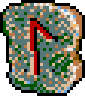

雷
| 雷駕飛鳥 | Staticbird |
|
| 電気の塊を撃ち出す攻撃呪術。撃ち出す電気の塊が、翼を広げた鳥に酷似している事からこの名称がついた。この魔鳥の最大電圧は2000ボルトに達し、心臓を直撃すれば即死もありえる。 | ||
| 雷簾柳 | Plasmaball |
|
| 3万ボルトもの電塊を発生させ、放電させる攻撃呪術。諸々の電気抵抗により目標物への影響は20分の1にも満たなくなるが、広範囲にわたり効果が期待できる。 | ||
| 鬼雷砲 | Thundergale |
 |
| 質量を伴う高電圧の落雷の雨を降らせる攻撃呪術。自然現象である雷雲を呼び起こし制御する事により、呪術師が生み出せる限界電量を遥かに越えた電力の所有を可能とした。 | ||
| 雷煌爆鼓 | Lightningbomber |
|
| 目標物の真下50センチの地中に高圧電流を発生させ、電解爆発を引き起こす攻撃呪術。電撃と爆破衝撃が相乗効果で増幅され、範囲は狭いものの絶大な威力を発揮する。 | ||